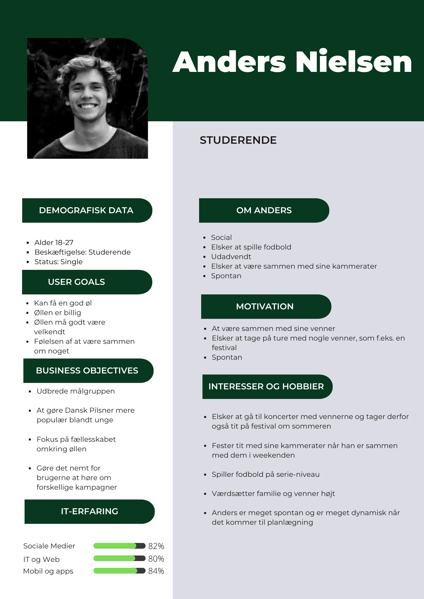
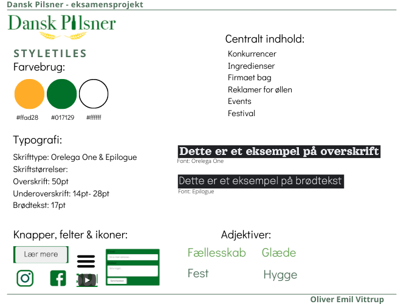
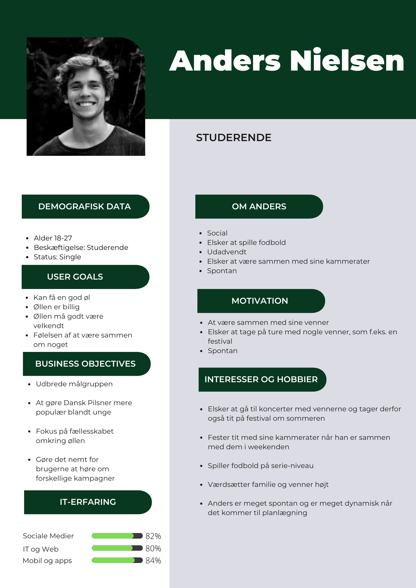
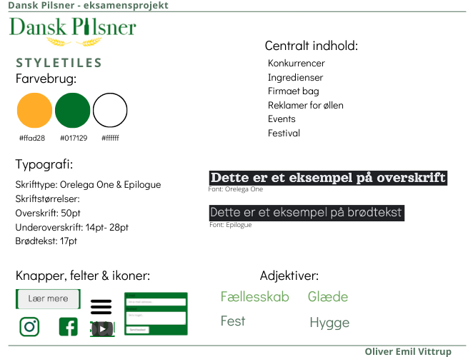

Dansk Pilsner var min eksamenspogave på 1. semester. Opgaven lød på at rebrande Dansk Pilsner til en ny målgruppe og jeg valgte at min målgruppe blev unge mennesker.
Her lærte jeg bl.a. at arbejde med moodboard og styletile, som hjælp i min rebrandingsprocess.
UX var også en stor del af rebrandingen, da jeg vha. informationsarkitektur og cardsorting fik mine idéer indskærpet til et specifikt design.
 



I dette projekt har jeg lavet alt fra start til slut. Jeg har arbejdet vidt omkring, både i forbindelse med user experience, grafisk design og programmering, samt branding.
Jeg har lavet Dansk Pilsners logo om i Photoshop for at give dem en ny identitet, men stadig skabe genkendelighed.
Jeg har arbejdet med hvordan man kan lokke flere unge til at drikke Dansk Pilsner, vha. interviewspørgsmål og analyse af svarene.